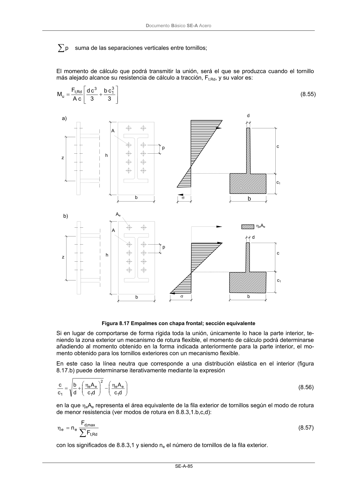

DB-SE-A Acero · edición 2007-10-23 · capa oficial
Documento DB-SE-A-oficial · SHA-256 del PDF 9ed9ea694aabfbda3bfbbef40dfe9223fde05d13c35bc2ba9751e5a96a22a64f
Página física 87 de 168.
Copia fiel del PDF fuente · Fuente oficial
Ficha de la disposición en la fuente oficial
Formato: Texto de la página (Markdown)
Documento Básico SE-A Acero SE-A-85 ∑p suma de las separaciones verticales entre tornillos; El momento de cálculo que podrá transmitir la unión, será el que se produzca cuando el tornillo más alejado alcance su resistencia de cálculo a tracción, Ft.Rd, y su valor es: + = 3 c b 3 c d c A F M 3 1 3 Rd ,t u (8.55) Figura 8.17 Empalmes con chapa frontal; sección equivalente Si en lugar de comportarse de forma rígida toda la unión, únicamente lo hace la parte interior, te- niendo la zona exterior un mecanismo de rotura flexible, el momento de cálculo podrá determinarse añadiendo al momento obtenido en la forma indicada anteriormente para la parte interior, el mo- mento obtenido para los tornillos exteriores con un mecanismo flexible. En este caso la línea neutra que corresponde a una distribución elástica en el interior (figura 8.17.b) puede determinarse iterativamente mediante la expresión η − η + = d c A d c A d b c c 1 e e 2 1 e e 1 (8.56) en la que ηeAe representa el área equivalente de la fila exterior de tornillos según el modo de rotura de menor resistencia (ver modos de rotura en 8.8.3,1.b,c,d): ∑ = η Rd ,t max ,d e e F F n (8.57) con los significados de 8.8.3,1 y siendo ne el número de tornillos de la fila exterior. p A h z b b c c1 d σ b σ c d ηeAe a) b) p A h z b Ae c1

Datos candidatos: compruebe celdas y notas en el PDF.